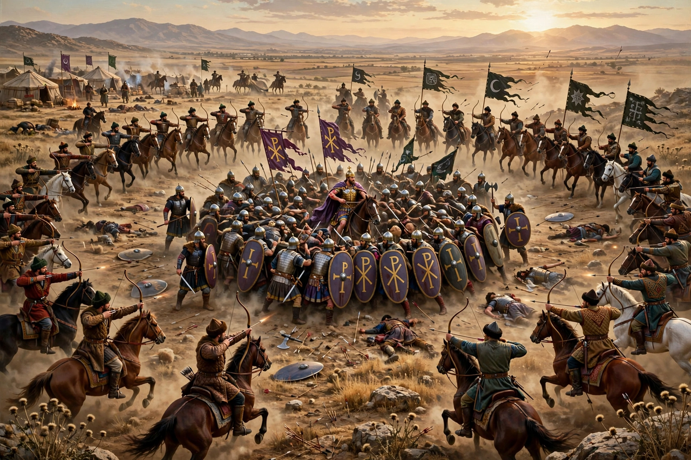

Battle of Manzikert
The Battle of Manzikert was fought between the Byzantine Empire and the Seljuk Empire on 19 August 1071 near Manzikert (present-day Malazgirt, Turkey). The decisive defeat of the Byzantine army and the capture of Emperor Romanos IV Diogenes marked a turning point: it opened Anatolia to Turkish migration and settlement, undermined the Byzantine theme system, and is traditionally seen as one of the causes that led the empire to appeal to the West — an appeal answered by the Crusades.
 | |
| Date | 19 August 1071 |
|---|---|
| Location | Near Manzikert, Byzantine Armenia (now Malazgirt, Turkey) |
| Result | Decisive Seljuk victory |
| Belligerents | Byzantine Empire — Seljuk Empire |
| Commanders | Romanos IV Diogenes (captured) — Alp Arslan |
| Strength | ~40,000–70,000 — ~20,000–30,000 |
Background
Turkish raiders had probed Byzantine Anatolia for decades. In 1071 Romanos IV marched east with a large, heterogeneous army — including Norman, Frankish, Varangian and Turkic mercenaries — to secure the Armenian frontier fortresses. The Seljuk sultan Alp Arslan, whose main objective was Fatimid Egypt, turned north from Syria to meet the threat.
The battle
Romanos divided his army, sending a large detachment under Joseph Tarchaneiotes toward Khliat; that force never rejoined, for reasons still debated. On 19 August the main armies met near Manzikert. The Byzantines advanced against the Seljuk crescent of horse archers, who retreated in good order, harassing them with arrows throughout the afternoon. Toward evening Romanos ordered a withdrawal to camp; the manoeuvre was misunderstood, and when the reserve under Andronikos Doukas — a political rival of the emperor — marched off the field, the Seljuks closed in. The Byzantine wings were crushed and Romanos, wounded, was captured.
Aftermath
Alp Arslan treated his prisoner with courtesy and released him after about a week in exchange for a ransom, a tribute and territorial concessions around Manzikert and Antioch. But in Constantinople Michael VII Doukas had been proclaimed emperor; Romanos was defeated in civil war, blinded, and died of his wounds in 1072. The decade of civil strife that followed, in which rival claimants hired Turkish bands as mercenaries, did more than the battle itself to deliver Anatolia to the Turks. By 1081 the Sultanate of Rum controlled much of the peninsula, and Emperor Alexios I's appeal for Western help set the stage for the First Crusade.
Historiography
Modern historians caution that the battle was not an immediate military catastrophe — Byzantine casualties among the professional core were moderate — but a political one: it shattered the legitimacy of the military aristocracy's candidate and unleashed the civil wars that hollowed out Byzantine Anatolia.
See also
Categories: 1071 · Battles involving the Byzantine Empire · Battles involving the Seljuk Empire